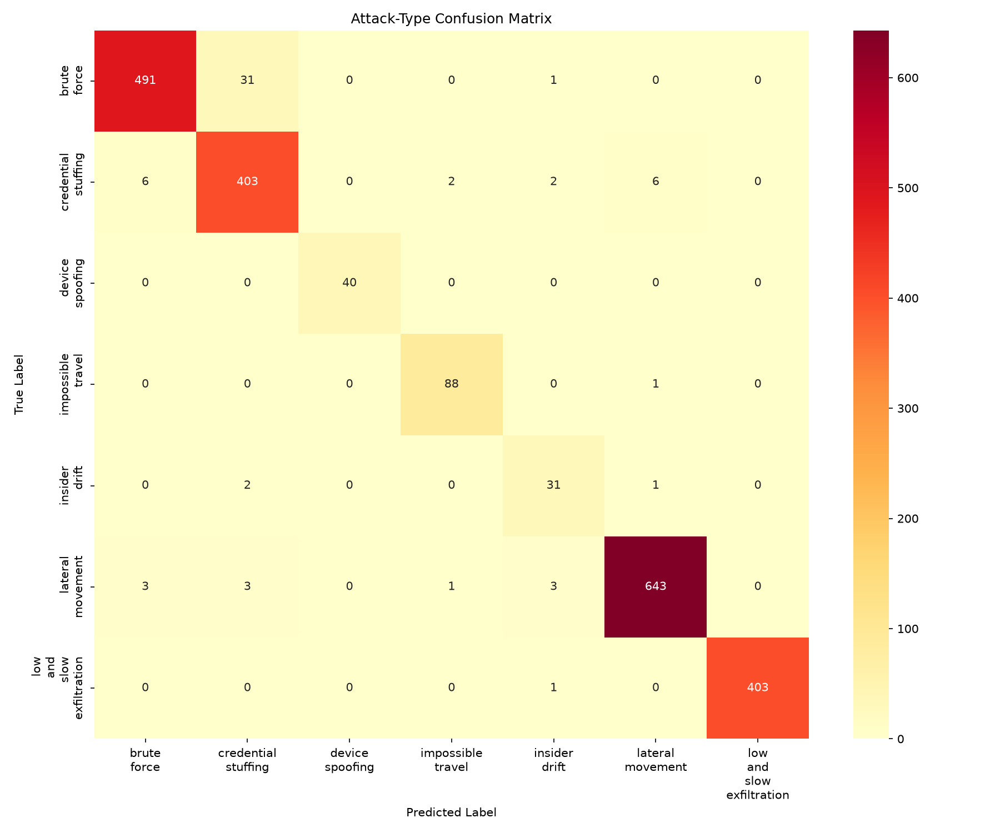
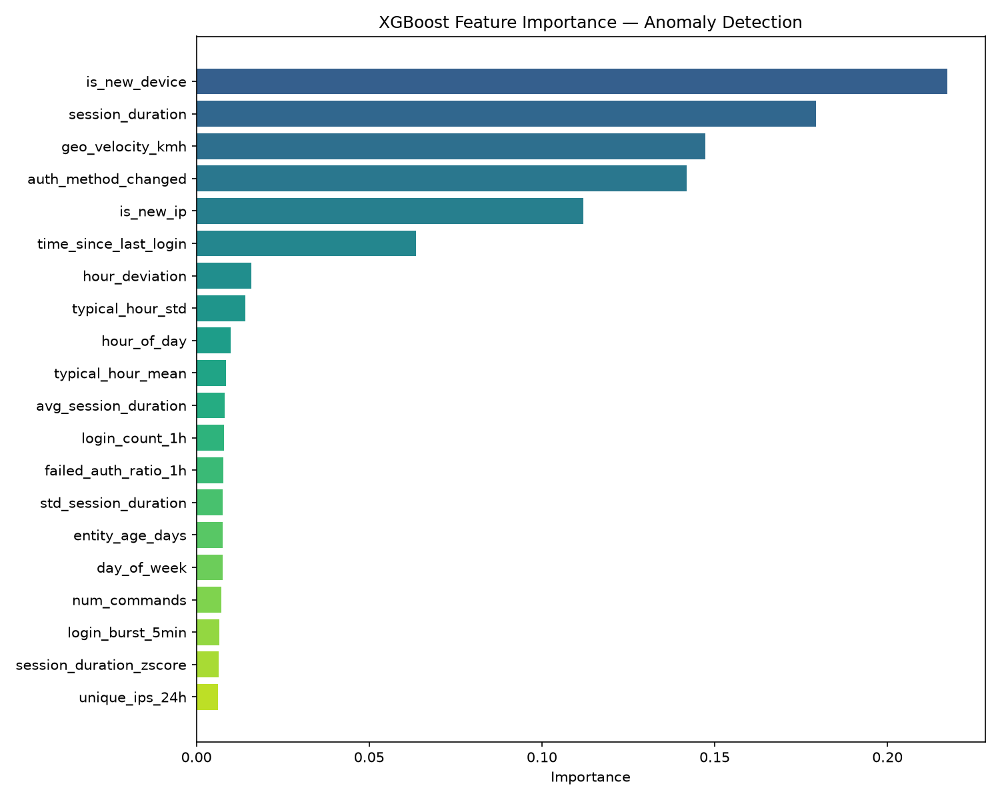
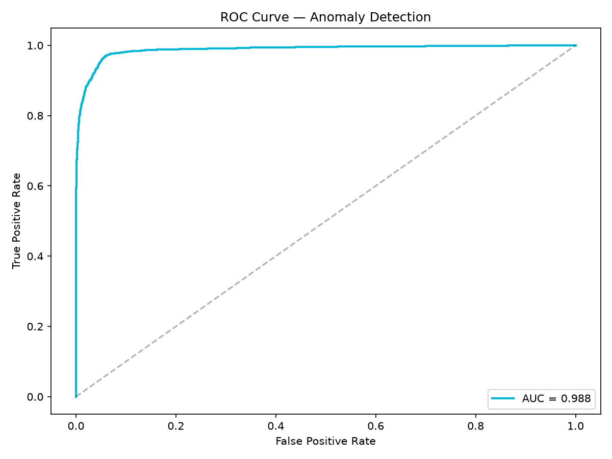
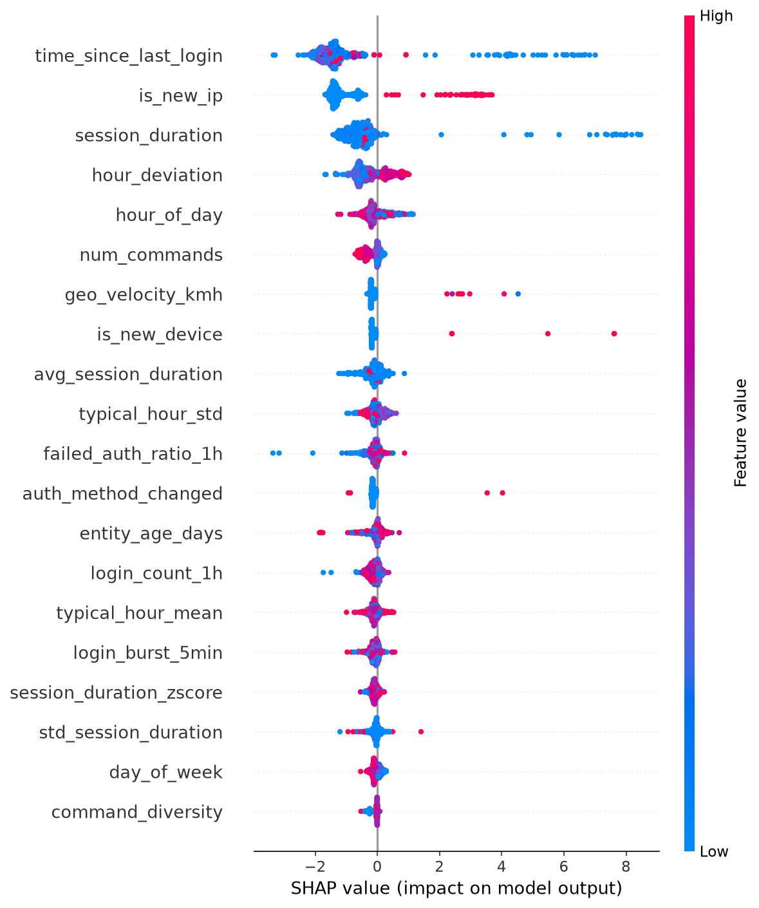

CyberShield AI is a production-ready, multi-tiered machine learning system designed to detect, classify, and explain behavioral anomalies in enterprise IT and OT networks. By learning habitual behavior profiles for every entity (users, service accounts, and edge devices), CyberShield AI identifies complex threat vectors—including zero-day intrusions, credential stuffing, lateral movement, device spoofing, low-and-slow exfiltration, and insider drift—in real time.
Traditional Security Information and Event Management (SIEM) systems rely heavily on static signature rules and arbitrary thresholds. In modern hybrid IT/OT infrastructures like Honeywell's, this approach fails due to three fundamental flaws:
CyberShield AI addresses these challenges with a 4-tier detection and explainability pipeline:
| Tier | Module / Model | Function & Methodology |
|---|---|---|
| Tier 1 | Baseline Profiler | Isolation Forest + One-Class SVM ensemble learning entity behavioral norms. Includes population-based fallback for cold-start entities (<20 events). |
| Tier 2 | Anomaly Detector | XGBoost Classifier + 2-layer LSTM Autoencoder sequence model. Outputs continuous Risk Score (0–100). Ensemble formula: 0.6*XGB + 0.4*LSTM. |
| Tier 3 | Attack Classifier | Multi-class XGBoost classifier with SMOTE minority oversampling. Attributes anomalies to 7 distinct attack taxonomies. |
| Tier 4 | SHAP Explainer | TreeExplainer calculating per-feature attributions. Converts SHAP values into natural-language narratives for SOC analysts. |
The feature engine transforms raw access logs into 43 ML-ready behavioral indicators across 5 domain categories:
hour_of_day, day_of_week, is_off_hours, time_since_last_login, rolling login counts (login_count_1h, 6h, 24h).geo_velocity_kmh (haversine speed between consecutive logins), unique_ips_24h, is_new_ip, ip_reputation_score.resource_overlap_ratio (Jaccard similarity with typical entity set), session_duration_zscore, command_diversity, failed_auth_ratio_1h.fingerprint_changed, is_new_device, auth_method_changed.entity_age_days, login_burst_5min, geo_anomaly_score, is_cold_start.



The analyst-facing dashboard is live at https://cybershield-ai-1-5gyk.onrender.com/. It features:
Cache-Control: no-cache headers to guarantee instant updates on cloud deploys.CyberShield AI demonstrates that combining unsupervised baselining, sequence autoencoders, tree boosting, and explainable AI delivers an unmatched defense system against modern cyber threats.